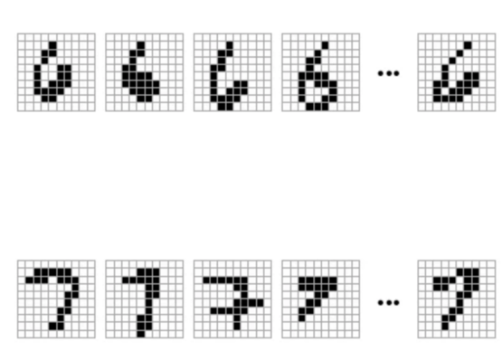
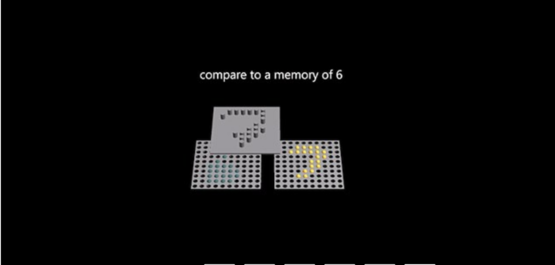

2018-07-23 16:35 果壳网
当我们谈起AI的时候我们在说什么？好莱坞电影里炫酷的金属质感机器人？隐藏在屏幕和晶体管背后神秘莫测的无形系统？
今天我们介绍的这种AI，支持它的硬件系统并不是我们通常认知的硅和晶体管，而是由人工合成的DNA分子构成。这个由加州理工学院的科学家们构建出来的“DNA人工神经网络”已经能够识别被转译成分子形式的数字啦！其研究成果发表在了2018年7月的《自然》杂志上。
首先，这个DNA人工神经网络的AI，在复杂庞大的AI系统中，属于“机器学习”这个细分领域，并且更具体地来说，属于机器学习研究中最受关注的人工神经网络的范畴。简单来说，就是模仿人脑的结构，通过大量的训练数据，“教会”计算机完成特定的任务。本次DNA AI被训练完成的任务，就是机器学习领域的经典测试——识别手写数字。
DNA分子能够作为AI的“硬件”设备，主要是因为它的特殊的分子结构。我们知道，DNA是由四种基本核苷酸组成：adenine (A)、cytosine (C)、guanine (G)和thymine (T)，这些核苷酸以特定组合连接成串，构成了双螺旋DNA分子。正是因为这些已知的组合模式，使得核苷酸链成了理想的计算设备——当有不同的分子存在的时候，它们会发生相应的化学反应，由此，这种架构得以被预先设计。
简单理解，DNA AI是以合成DNA分子为“硬件”，分子间特定的化学反应为“算法”的一种生物计算机。
这套DNA AI最初由加州理工学院的助理教授钱璐璐在2011年设计构造，本次研究由她的研究生凯文·切利（Kevin）主导，在导师的研究基础上，他通过将用来被识别的模式转译成“分子数字”，从而大大提升了这套DNA 人工神经网络的性能。
所谓的“分子数字”，是把手写数字转译成在一个100（10*10）比特正方形网格上的不同的20比特模式，网格上的每一个比特都由一个DNA分子来代表，也就是说，每个“分子数字”都由100个DNA分子库中的任意20个组成。试管中的DNA跟虚拟网格上的状态可是不同的——它们被混成一坨。所以分子在网格上的位置由它在试管中的浓度决定。DNA神经网络本质上是这样的：当这20个DNA分子的浓度落在代表预设数字的区间时（意味着当被转译到10*10的网格上时，它们的排布模式符合这个数字），相应的化学反应就会产生，由此判断该图形是否符合特定的数字模式。
切利首先构建了一个简单的神经网络，来区分被转译成分子数字的数字6和7。在对每个数字的36个不同版本的分子手稿的测试中，这套DNA神经网络都给出了准确的答案。在这套DNA神经网络系统中，切利使用了“赢者通吃”（winner-take-all）的决策算法，借由一个被称为“歼灭者”（annihilator）的合成DNA分子来逐个识别被测数据与比较对象。
切利介绍说：“歼灭者会迅速吸收掉每两种相比较分子反应而形成的惰性物质，从而形成一种络合物，直到最终剩下一种“超级赢家”的分子。这时候，“超级赢家”的浓度最高，并且能够释放荧光信号，来显示系统给出的最终答案。”
这种“赢家通吃”策略不仅仅在这种基础的两两对比的构架中有效，也同样适用于更复杂的、用于区分数字1-9的DNA神经网络系统。在这种更复杂的系统中，系统决策的结果由两种荧光信号共同表示：比如绿色和黄色的信号组合代表数字“5”，而红绿组合则代表“9”。
在未来的研究中，研究者希望能够给这个DNA神经网络增加记忆功能，并用以辅助提升医学测试。
切利说：“通常，医学诊断能够探测出集中生物分子的存在，比如胆固醇和血糖。如果能够应用我们设计的生物电路板，未来的诊断能够同时检测上百种生物分子，并且直接在分子环境中给出给出分析结果。”